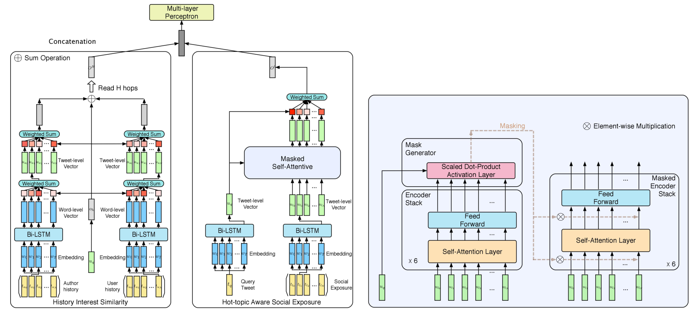

今天这篇论文是一篇2019年SIGIR上的对于社交媒体信息处理的文章。感觉其思想可以借鉴，学习一下。
本文的基本任务是转发预测，即给定一个query tweet $t_q$和用户u，预测该用户u是否会转发$t_q$。
实验数据
将所有推特按时间排序，得到整个推特序列。然后得到每个用户的按时间排序的推特序列。使用用户在timeline中的转发作为正样本；转发之前的用户的followee发的30个推文作为timeline（环境）；随机选择该用户转发之前的30条推文作为用户历史数据；随机选择推文作者在转发之前的30条推文作为作者历史数据；
对于每一次转发，随机选择5个用户没有转发的推文作为负样本，并像前面一样构建timeline和转发历史。
数据格式如下：
(user, tweet, user-history, author-history, timeline)
对所有的转发构建上面这样的数据，并且每一次转发也加入了5个负样本。构成了实验的训练数据。
Motivation
本文的motivation是，用户更容易转发并参与讨论他们感兴趣的推文。并且用户的兴趣通常集中于一个有限的范围，并且短时间内通常很少改变。
进一步，用户想要参与的话题很可能会与他们过去曾经发过的话题相似。
然而，人们都是由探索精神的，通常也愿意接受一些比较火爆的新事物（这也是为什么社交媒体都会有“热点推荐”这个功能，比如Twitter中的”in case you missed it”和Facebook中的”top stories”以及微博中的“热搜”等）。
基于此，本文提出下面的假设：
用户的行为也会受他们周围的人（这里采用的是他们的followees）影响。也就是说，用户对于某个话题本身可能并不感兴趣，但是他周围的人大多都参与了这个话题，所以他也会关注这个话题。
为了验证这个假设，作者分析了“用户历史数据”，“用户转发历史”，“用户的followees的实时推文”之间的差异。分析方法是使用LDA进行话题检测。作者将LDA话题数定为50并衡量这三个集合上的话题分布的KL散度。结果表明，用户转发的推文与用户历史发表的推文的话题分布的差异更小。另外，被转发的推文中，还有一些与用户历史发布推文不太相关的话题。
所以说实验验证假设有其合理性。所以下文作者提出一个模型，整合user的历史信息、author的历史信息以及环境信息，来进行转发预测。
APPROACH
首先定义本文的任务。转发预测是：给定一个查询推特$t _ q$和一个用户u，目标是基于三部分信息预测u是否会转发这个$t _ q$。这三部分信息具体解释分别是：
- (1)$t _ q$的作者的历史信息$H _ a=\{t _ {a _ 1},t _ {a _ 2},…,t _ {a _ N}\}$
- (2)用户u的历史信息$H _ u=\{t _ {u _ 1},t _ {u _ 2},…,t _ {u _ N}\}$
- (3)用户u的followee的实时环境推文$H _ l=\{t _ {l _ 1},t _ {l _ 2},…,t _ {l _ N}\}$。
模型架构如图

Tweet Feature Representation
单词表示用预训练的glove词嵌入。每个单词初始化为一个one-hot向量，通过乘以一个词嵌入矩阵 M 映射成为一个连续向量表示：$w _ i=Mword _ i$。词嵌入矩阵维度为 d×|V|，d是词嵌入维度，|V|是词表大小。因此得到一个word-level的特征表示：$t=\{w _ i,w _ 2,…,w _ T\}$，其中T是推特的最大长度，长度不够T的padding到T。
然后使用bi-LSTM将word-level的推特表示输入，构建sentence-level的特征表示。每个时刻的输出$u _ t=[h _ t^{(f)}:h _ t^{(b)}]$表示第t个单词的表示。整个过程中，词嵌入矩阵和bi-LSTM是在整个模型上端到端训练的。
Hierarchical Attention Memory Network
一方面，user的兴趣会反应在他的历史发布的信息中；另一方面，user的历史兴趣和author的兴趣会影响user是否转发query tweet。
因此，本文提出一个层次注意力记忆网络来建模author和user的兴趣相似性。
Word-level encoder
先看图3的左半部分，左边的输入是author的历史推特，右边的输入是user的历史推特。计算过程如下：
给定一个历史推特集合$t_1,…,t_N$。对于第i个推特，通过词嵌入矩阵M将推特i的每个单词j变成词向量$w_{ij}$。然后将单词作为bi-LSTM的输入，每个时刻的输出$u_ij$作为单词的隐藏状态，注意这时候推特i是由一个d×T的矩阵表示的，d是词向量维度，T是推特的最大长度。因为考虑到一个推特中，每个单词的贡献不一样，所以计算推特中每个单词的注意力来得到推特i的新的表示。word-level encoder和下面的tweet-level encoder作为一个整体，堆叠了H层，第h层就输出一个$O^h$。在第h层中，使用上一层的query vector $O^{h-1}$与推特i计算注意力权重来生成关于word-level的用户历史的注意力概率：
$$
\begin{aligned}
z _ {i,T}^h &= (W _ O^hO^{h-1})^{tr}W _ T^hu _ {i,T} \\
a _ {i,T}^h &= softmax(z _ {i,T}^h/\sqrt{d_k}) \\
\breve{u} _ i^h &= \Sigma _ {j=0}^T \ a _ {i,j}^hu _ {i,j}
\end{aligned}
$$
其中$\sqrt{d_k}$表示缩放因子，就是相当于是隐藏层维度。T是推特的最大长度，$u _ {iT} \in R^(d×T)$是推特i的矩阵表示（单词级的表示，所以每个推特表示为一个矩阵），$W_T^h \in d_k \times d$是把$u_{i,T}$映射到隐藏层空间。“tr”表示转置。query tweet的表示$O^{h-1}$是一个d \times 1维向量，所以$W_O^h O^{h-1}$就是将query tweet的表示做一个映射，映射到隐藏层的$d_k$维。然后与$W_T^h u _ {i,T}$作点积。然后得到$a _ {i,T}^h$经过softmax得到权重，通过对推特i中的每个单词的表示进行重新加权得到注意力之后的推特i的表示$u_i^h$ 。
这样就得到对单词级别与query tweet进行注意力计算之后的推特表示。注意第一层的query tweet的表示$O^1$是用query tweet的表示$u_q$初始化的。query tweet的表示可以见图3，就是将query tweet $t_q$的单词序列经过bi-LSTM后，取最后一个时刻的输出作为$u_q$。
Tweet-level encoder
经过上面的过程，对每一个推特$t_i$得到了一个新的表示$u ̆_ i^h$。类似的，考虑到不是所有推特对于用户的兴趣都有相同的贡献。因此再继续使用上面得到的query tweet $O^{h-1}$来对每个推特计算注意力，从而得到每个推特的新的表示：
$$
\begin{aligned}
z _ {N}^h &= (W _ O^hO^{h-1})^{tr}W _ N^h \breve{u} _ {N}\\
a _ {N}^h &= softmax(z _ {N}^h/\sqrt{d_k})\\
\breve{u} _ * ^ h &= \Sigma _ {i=0}^N \ a _ {i}^h \breve{u} _ {i}
\end{aligned}
$$
$u ̆_ N \in R^(d×N)$是推特的表示，N是用户历史推特数量。计算过程与单词级别类似。* 号表示最后的用户兴趣表示。
再次注意，word-level encoder和tweet-level encoder作为一个整体，堆叠了H层，第h层就输出一个$O^h$。每一层的$O^h$按如下更新：
$$
O^h = \breve{u} _ u^h + O^{h-1} + \breve{u} _ a^h
$$
这样堆叠多层就能循环累计网络中的信息，最终产生一个联合了用户历史兴趣和作者历史兴趣的表示。
Masked Self-Attentive Mechanism
作者提出另一个Motivation：
用户的followee发的实时推特会影响该用户，也可能会吸引用户加入他们的讨论。因此需要引入用户的followee的实时推特作为用户所处的环境。但是用户所处的实时推特环境一般会包含很多不同的话题，因此，需要建模实时推特包含的热点话题。由于实时推特是非序列性的（也就是上一条推特和下一条推特没有前后位置关系），因此不适合使用典型的RNN模型。因此，使用最大长度为1的自注意力机制更加合适用来构建context感知的表示。
Preliminary
文中的Masked Self-Attention是基于Transformer构建的，文中介绍了Transformer和attention的一些基本知识。
注意力机制：从所有query中给定一个query $q _ i \in R^d$，给定一组key $k _ t \in R^d$，values $v _ t \in R^d$，$t=1,2,…,T$。scaled dot-product attention根据key和query计算得到的点积结果决定权重，然后根据这个权重对value重新进行加权：
$$
Att(Q,K,V)=softmax(\frac{K^TQ}{\sqrt{d}} V)
$$
多头注意力（multi-head attention）就是用了H个平行的scaled dot-product attention，每一个叫做一个“head”。公式如下：
$$
MultiHead(Q,K,V)=Concat(head_1, head_2, …, head_H)W^O
$$
$$
head_i = Att(QW _ i^Q, KW _ i^K, VW _ i^V)
$$
其中的Att()就是普通的scaled dot-product attention，所以可以看出，多头注意力的每个头就是将Q，K，V经过一个线性变换（也就是乘以一个矩阵W，对应公式中的$W _ i^Q$ , $W _ i^K$ , $W_i^V$），将QKV都映射到另一个空间，在另一个空间下计算注意力。H个头就在H个空间下计算注意力，最后将H个空间下的注意力拼到一起，得到最终的结果。其中$W _ i^Q$ , $W _ i^K$ ,$W _ i^V \in R^{d×d _ k }$是独立的映射矩阵，$ W^O \in R^{hd _ k×d}$。
上图是图3中的右半部分，是Masked Self-attention模块，包含三个部分：
- 1)General Stacked Encoder（就是图中的Encoder Stack）
- 2)Mask Generator
- 3)Masked Encoder Stack。
总体框架是，general stacked encoder和query tweet生成一个mask matrix，然后用这个得到的mask对masked encoder stack的每一层的输入进行mask（相乘）来感知热门话题。下面详细说一下几个部分。
Transformer模块改动不大：
$$
\begin{aligned}
\breve{u} _ {l_N}^i &= MultiHead(u _ {l_N}^{i-1}, u _ {l_N}^{i-1}, u _ {l_N}^{i-1}) \\
u _ {l_N}^i &= FFN(\breve{u}^i _ {l_N})
\end{aligned}
$$
其中$u _ {l _ N}^i$表示第i层encoder的输出，$u _ {l _ N}^0$是用实时环境推特表示矩阵$u _ {l _ N}$初始化的，不同之处就在于作者使用了额外的mask来感知用户的followees的实时环境推特的热点话题：
$$
\begin{cases}
u _ {l _ N}^{i-1}=u _ {l _ N}^{i-1},&if Mask=None\\
u _ {l _ N}^{i-1}=Mask \ u _ {l _ N}^{i-1},&Else
\end{cases}
$$
其中mask是mask generator根据实时环境推特和query tweet生成的。具体来说，是通过计算$u _ q$和每个环境推特的相关概率得到的：
$$
Mask = \sigma(\frac{(u _ q W _ 1)^T u _ {l _ N}}{\sqrt{d}})
$$
其中σ表示sigmoid激活函数。$u _ {l _ N}$ 是general encoder stack的最后一层的输出。
最后，使用query tweet $u _ q$去查询masked encoder的输出，生成hot-topic aware的representation $O^l$：
$$
\begin{aligned}
z _ N &= (W _ N u _ q)^tr W _ N u _ {l _ N}\\
a _ N &= softmax(z _ N / \sqrt{d})\\
O^l &= \Sigma _ {i=0}^N a _ i u _ {l _ N}
\end{aligned}
$$
Prediction
最后预测的过程，将上面得到的$O^H$和$O^l$拼接，记作$O^f$，输入一个单层的MLP中，来预测该user是否会转发该tweet：
$$
f = \sigma(MLP(O ^ f))
$$
最终预测概率为：
$$
p(y=i|f;\theta _ s) = \frac{exp(\theta _ s^i f)}{\Sigma_j exp(\theta _ s^j f)}
$$
其中$θ _ s^i$是第i类的权重向量，$j \in {0,1}$。（就是使用softmax）
本文中使用的损失函数如下：
$$
J = \Sigma _ {(t _ q,a,u,l,i) \in D} - \log{p(i|t _ q,a,u,l;\theta)}
$$
其中D是训练集。$i \in {0,1}$是四元组$(t _ q,a,u,l)$的标签，i=1表示用户u会转发推特$t_q$，否则不会。θ表示整个模型的参数。